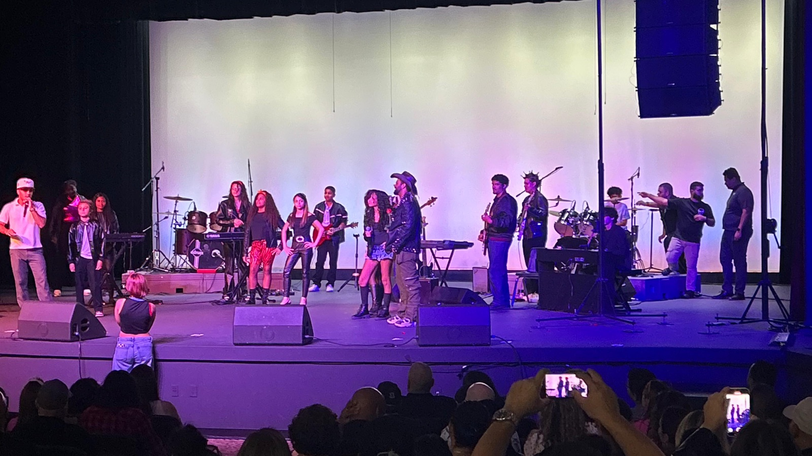
A full-day live music championship where student bands from four music schools battle on a professional stage — with real judges, real awards, masterclasses, and a crowd that decides who rises. Un campeonato de música en vivo de día completo donde bandas estudiantiles de cuatro escuelas de música compiten en un escenario profesional — con jueces reales, premios reales, masterclasses y un público que decide quién sube.
World of Bands Florida brings together student bands, music schools, coaches, families, and the community for one electric day. Young musicians perform on a professional stage, get feedback from industry judges, attend masterclasses, and compete for band and individual awards. But it's more than the trophies — it's a day of socializing, jamming, and meeting musicians from other schools. Everyone goes home with new friends and an experience they'll never forget. World of Bands Florida reúne a bandas estudiantiles, escuelas de música, coaches, familias y la comunidad en un día eléctrico. Los jóvenes músicos tocan en un escenario profesional, reciben feedback de jueces de la industria, asisten a masterclasses y compiten por premios de banda e individuales. Pero es más que los trofeos — es un día para socializar, tocar y conocer músicos de otras escuelas. Todos vuelven a casa con nuevos amigos y una experiencia inolvidable.
Four live masterclasses during the event day — from owning the stage to making a living in music and using AI to power your ideas.Cuatro masterclasses en vivo durante el evento — desde adueñarte del escenario hasta vivir de la música y usar IA para potenciar tus ideas.
Every band performs twice on a professional stage with pro sound and lighting — a qualifying set and a full division set. No band is eliminated.Cada banda toca dos veces en un escenario profesional con sonido e iluminación pro — un set clasificatorio y un set completo de división. Ninguna banda es eliminada.
Meet musicians from other schools, share the backstage, trade ideas — and end the day with one giant group photo of every band in the building.Conoce músicos de otras escuelas, comparte el backstage, intercambia ideas — y cierra el día con una foto grupal gigante con todas las bandas.
Three competitive stages. After qualifying, all scores reset to zero — so every band starts its division with an equal shot at the title. Tres etapas competitivas. Después de la clasificación, todos los puntajes vuelven a cero — así cada banda empieza su división con las mismas posibilidades de ganar.
All 12 bands play a 5-minute set of their strongest material in front of the judges and the crowd.Las 12 bandas tocan un set de 5 minutos con su mejor material frente a los jueces y el público.
The judges' top 5 advance to Division 1 — and the 6th spot is claimed by the audience's Crowd's Favorite vote. The other six form Division 2.El top 5 de los jueces avanza a División 1 — y el 6.º lugar lo decide el voto Favorito del Público. Las otras seis forman la División 2.
Each division battles with full 10-minute championship sets — pro lighting, band intros on screen, and two complete awards ceremonies.Cada división compite con sets de campeonato de 10 minutos — iluminación pro, presentaciones en pantalla y dos ceremonias de premiación completas.
The six strongest bands of the day. The main event of the night, presented with full production.Las seis bandas más fuertes del día. El evento principal de la noche, con producción completa.
The six bands that didn't make Division 1 — with a fresh scoreboard, its own podium, category recognitions, individual awards, and awards ceremony.Las seis bandas que no llegaron a la División 1 — con marcador nuevo, su propio podio, reconocimientos por categoría, premios individuales y ceremonia de premiación.
The crowd votes three times.El público vota tres veces. ① During qualifying, the audience's favorite band claims the sixth spot in Division 1. ② Division 1 has its own Crowd's Favorite Award. ③ Division 2 has one too. Bringing your fans always matters.① Durante la clasificación, la banda favorita del público gana el sexto lugar de la División 1. ② La División 1 tiene su propio Premio Favorito del Público. ③ La División 2 también. Traer a tus fans siempre cuenta.
Qualified judges evaluate every performance — in qualifying and in the divisions — across the same four official categories.Jueces calificados evalúan cada presentación — en la clasificación y en las divisiones — con las mismas cuatro categorías oficiales.
Pitch, timing, execution, balance, dynamics, transitions — the overall musical quality of the set.Afinación, tiempo, ejecución, balance, dinámicas, transiciones — la calidad musical del set.
Confidence, movement, use of the stage, band chemistry, professionalism, and recovery under pressure.Confianza, movimiento, uso del escenario, química de banda, profesionalismo y recuperación bajo presión.
Original arrangements, bold interpretations, medleys, original music, and a performance identity that's yours.Arreglos originales, interpretaciones audaces, medleys, música original y una identidad escénica propia.
Connection, energy, memorable moments, entertainment value — the effect your band creates inside the venue.Conexión, energía, momentos memorables, valor de entretenimiento — el efecto que tu banda crea en el venue.
An independent, unbiased panel.Un panel independiente e imparcial. No judge will be a teacher at any participating school. The panel is made up of music industry professionals — musicians, producers, and other unbiased experts — and will be publicly presented before the event, so every school knows exactly who's scoring.Ningún juez será maestro de una escuela participante. El panel está formado por profesionales de la industria musical — músicos, productores y otros expertos imparciales — y será presentado públicamente antes del evento, para que cada escuela sepa exactamente quién puntúa.
From morning check-in to the final group photo — here's how the day unfolds.Desde el check-in de la mañana hasta la foto grupal final — así se vive el día.
Schools confirm lineups, songs, instruments, and technical needs.Las escuelas confirman alineaciones, canciones, instrumentos y necesidades técnicas.
Food, merch, sponsor tables, raffles, photography area.Comida, merch, mesas de patrocinadores, rifas, área de fotografía.
The 4 schools, 12 bands, and judges are introduced live.Se presentan en vivo las 4 escuelas, 12 bandas y los jueces.
Five-minute sets. Judges score, audience votes Crowd's Favorite.Sets de cinco minutos. Los jueces puntúan, el público vota a su Favorita.
"How to Own the Stage as a Band" and "How to Earn a Living as a Musician" run at the same time — pick your room."Cómo Adueñarte del Escenario como Banda" y "Cómo Vivir de la Música" al mismo tiempo — elige tu sala.
Top 5 by judges + the Crowd's Favorite go to Division 1. Scores reset to zero.Top 5 de los jueces + la Favorita del Público van a División 1. Los puntajes vuelven a cero.
Food, merch, raffles, photos with the bands.Comida, merch, rifas, fotos con las bandas.
"Instrument & Band Skills" and "How to Use AI to Leverage Music Ideas" run at the same time — pick your room."Habilidades de Instrumento y Banda" y "Cómo Usar la IA para Potenciar Ideas Musicales" al mismo tiempo — elige tu sala.
Six bands, 10-minute sets, followed by the Division 2 Awards Ceremony at 5:00 PM.Seis bandas, sets de 10 minutos, seguido de la Ceremonia de Premios División 2 a las 5:00 PM.
Full production, band intros on screen, six championship sets.Producción completa, presentaciones en pantalla, seis sets de campeonato.
The Division 1 Champion is crowned — with a possible encore.Se corona al Campeón de la División 1 — con posible encore.
All 12 bands, coaches, judges, and staff — one photo, one family.Las 12 bandas, coaches, jueces y staff — una foto, una familia.
* This is our preliminary timeline — times and activities are subject to change before the event.* Este es nuestro horario preliminar — los horarios y las actividades pueden cambiar antes del evento.
Band trophies, category recognitions, and individual musician awards — presented separately in each division so talent gets recognized everywhere.Trofeos de banda, reconocimientos por categoría y premios individuales — entregados por separado en cada división para reconocer el talento en todas partes.
1st, 2nd & 3rd place in each category, in each division:1.º, 2.º y 3.er lugar en cada categoría, en cada división:
No band is eliminated, and every participating student receives official event recognition.Ninguna banda es eliminada, y cada estudiante participante recibe reconocimiento oficial del evento.
Four masterclasses are built into the event day — included for every registered student and Full Event Access guest.Cuatro masterclasses son parte del día del evento — incluidas para cada estudiante registrado e invitados con Acceso Completo.
The performance skills that separate good bands from unforgettable ones.Las habilidades escénicas que separan a las bandas buenas de las inolvidables.
Hands-on stations for every member of the band.Estaciones prácticas para cada integrante de la banda.
Real talk from a working industry professional: how musicians actually get paid to do what they love.Charla real de un profesional de la industria: cómo los músicos realmente cobran por hacer lo que aman.
A fast overview of today's AI technology for musicians — and how to turn a song idea into a finished track.Un vistazo rápido a la tecnología de IA actual para músicos — y cómo convertir una idea en una canción terminada.
* Masterclass lineup, topics, and presenters may still change before the event.* La programación, los temas y los presentadores de las masterclasses aún pueden cambiar antes del evento.
Participating bands don't just perform — they get promoted. Before, during, and after the event, we put your musicians in the spotlight across all our social media channels.Las bandas participantes no solo tocan — las promocionamos. Antes, durante y después del evento, ponemos a tus músicos bajo los reflectores en todos nuestros canales de redes sociales.
Each band gets its own official feature — name, logo, and lineup presented like the pros.Cada banda tiene su feature oficial — nombre, logo y alineación presentados como los profesionales.
Professional event photography and video content your band can share, post, and keep forever.Fotografía profesional del evento y contenido en video que tu banda puede compartir, publicar y conservar para siempre.
On-camera interviews and backstage moments — your musicians tell their story like touring artists.Entrevistas en cámara y momentos de backstage — tus músicos cuentan su historia como artistas de gira.
Features, reels, and recaps published across Instagram, Facebook, YouTube, and TikTok.Features, reels y recaps publicados en Instagram, Facebook, YouTube y TikTok.
In 2025, The World of Music School entered Central Florida's first inter-school Battle of the Bands — 250+ guests, 7 competing bands, 2 schools — and our band The Undefined took first place. In 2026, we're hosting. Bigger stage, more schools, a full championship.En 2025, The World of Music School entró al primer Battle of the Bands entre escuelas de Florida Central — más de 250 invitados, 7 bandas, 2 escuelas — y nuestra banda The Undefined ganó el primer lugar. En 2026, nosotros somos los anfitriones. Escenario más grande, más escuelas, un campeonato completo.
2 music schools · 7 bands · 250+ guests. Our band The Undefined took first place at Central Florida's first inter-school Battle of the Bands.2 escuelas de música · 7 bandas · más de 250 invitados. Nuestra banda The Undefined ganó el primer lugar en el primer Battle of the Bands entre escuelas de Florida Central.
4 music schools · 12 bands · 2 divisions · a full-day championship with masterclasses, individual awards, and the Crowd's Favorite vote.4 escuelas de música · 12 bandas · 2 divisiones · un campeonato de día completo con masterclasses, premios individuales y el voto Favorito del Público.
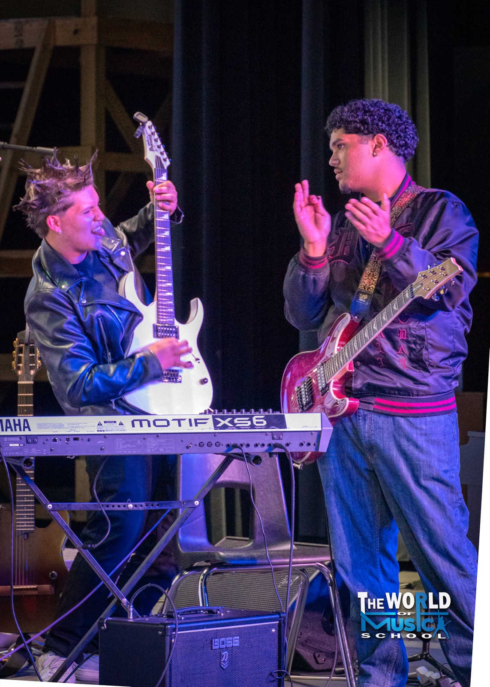
The Guitar SoloEl Solo de Guitarra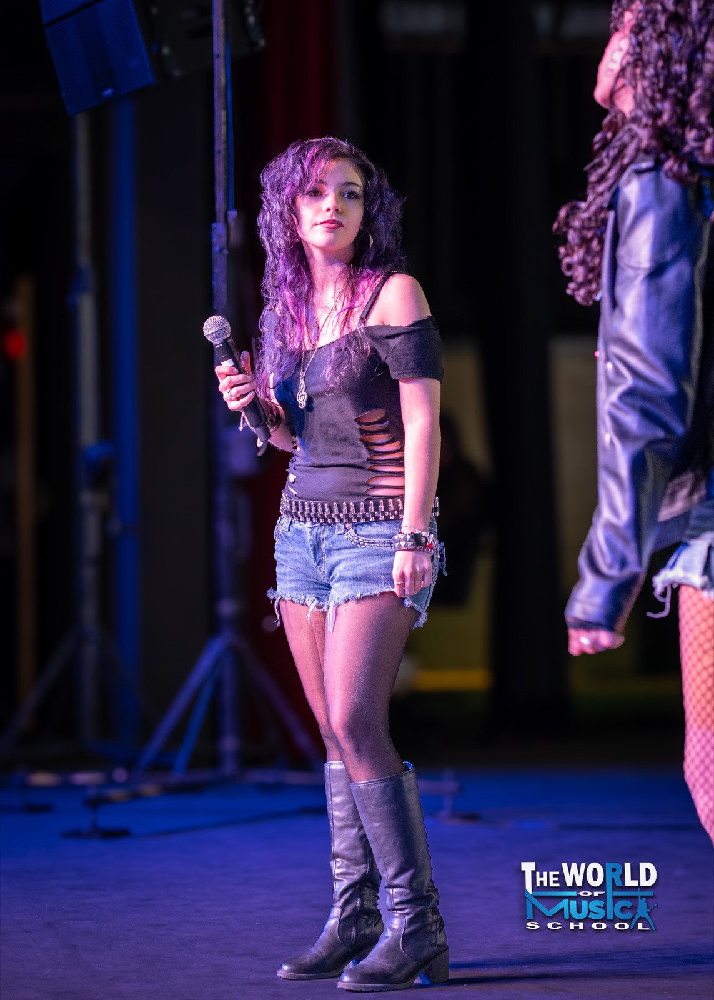
Front & CenterAl Frente y al Centro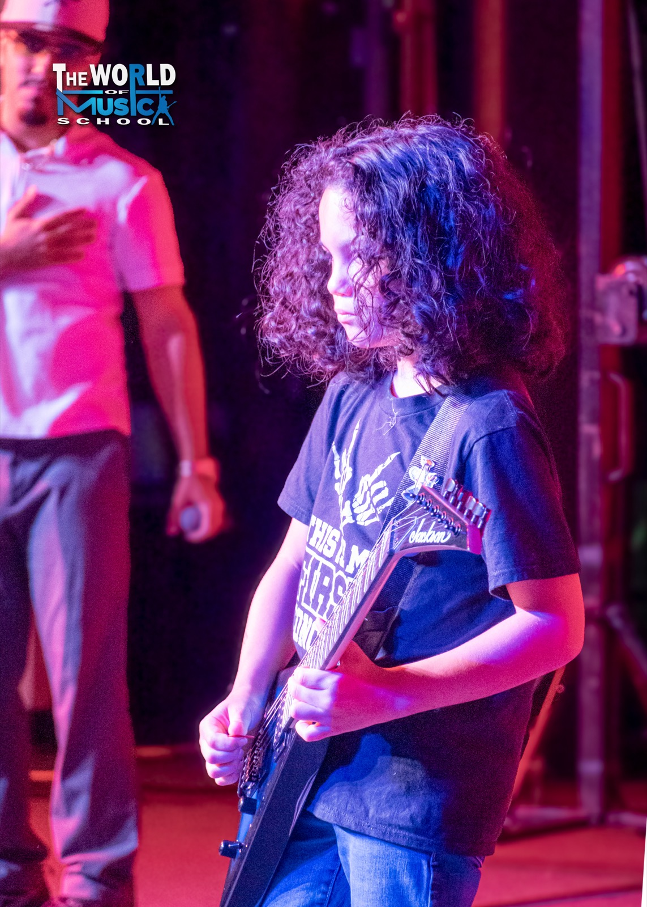
The National Anthem, on GuitarEl Himno Nacional, en Guitarra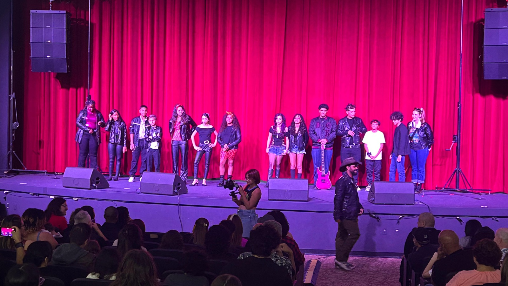
The LineupLa Alineación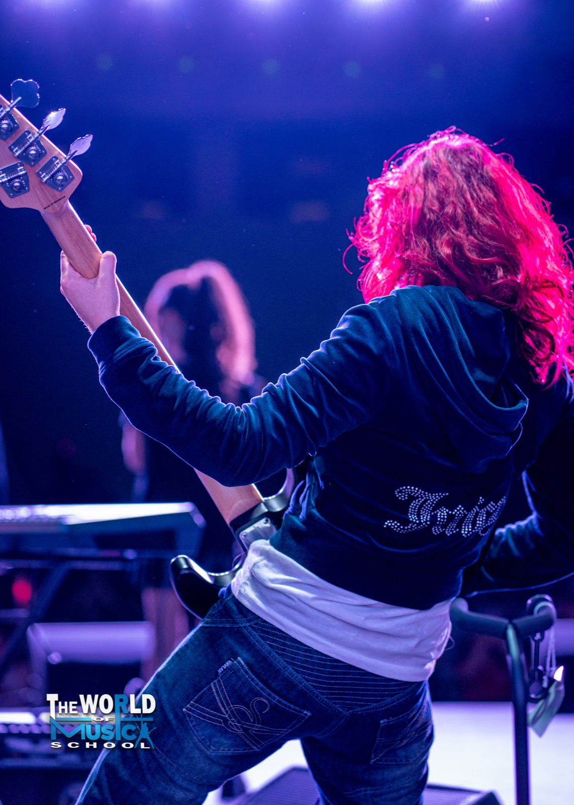
Holding Down the Low EndSosteniendo el Bajo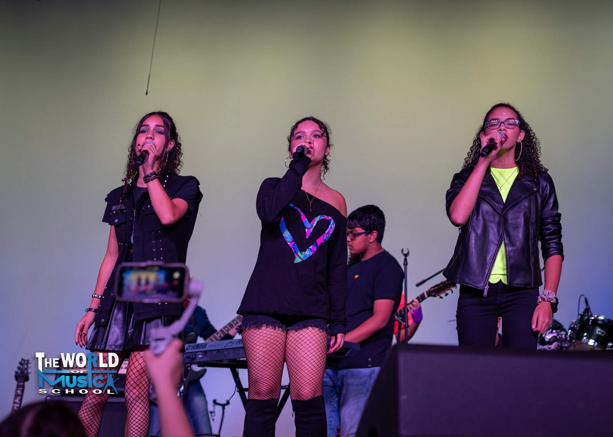
The Wicked, LiveThe Wicked, en Vivo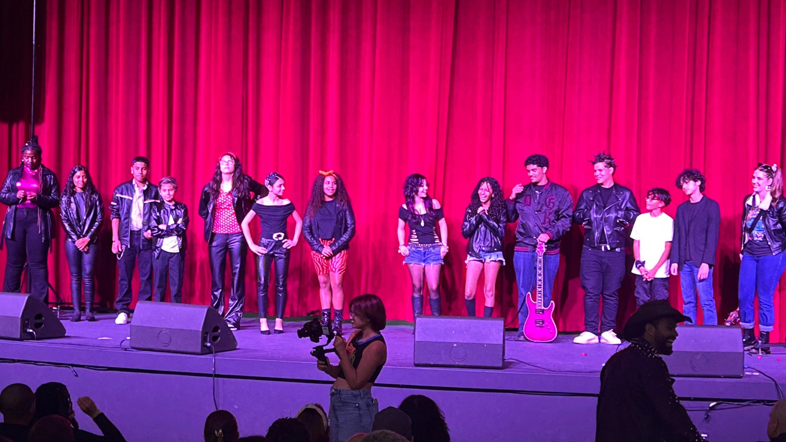
Before the AwardsAntes de los Premios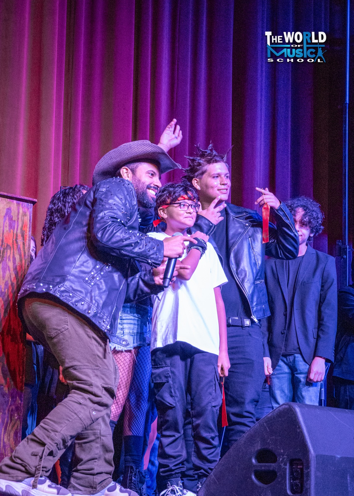
The Champions' MomentEl Momento de los Campeones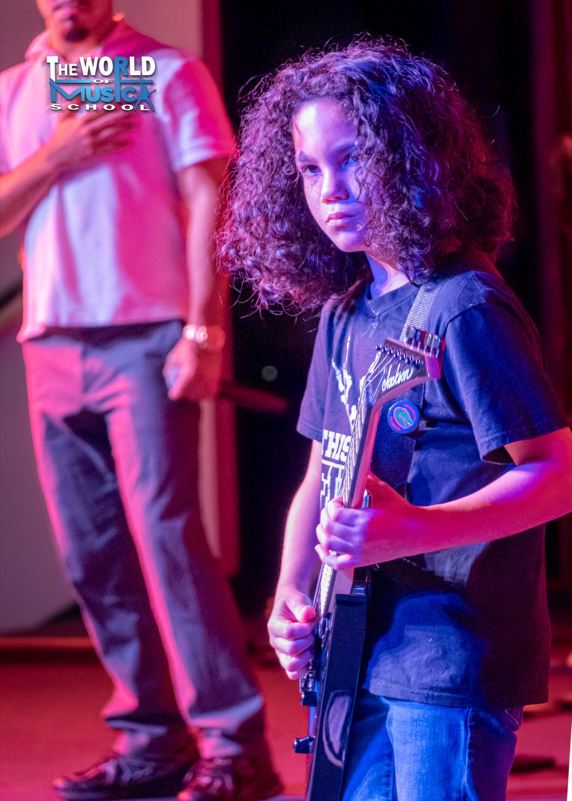
Opening the ShowAbriendo el Show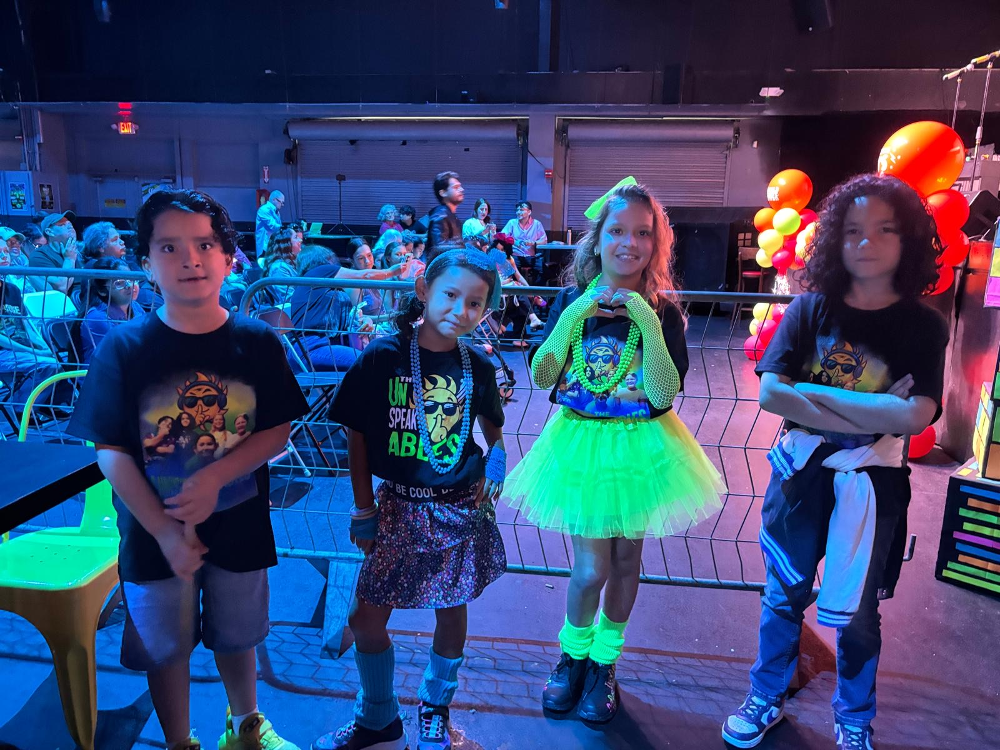
The Next GenerationLa Nueva Generación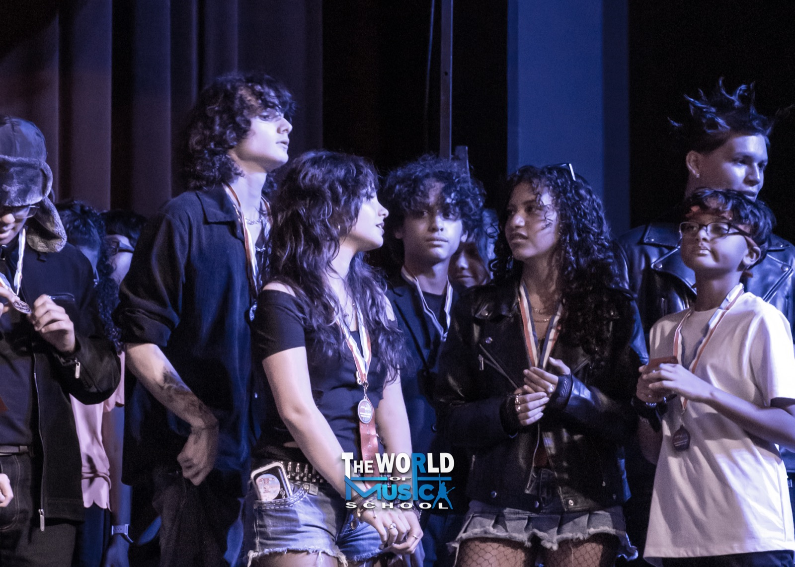
Medals On. Hearts Racing.Medallas Puestas. Corazones a Mil.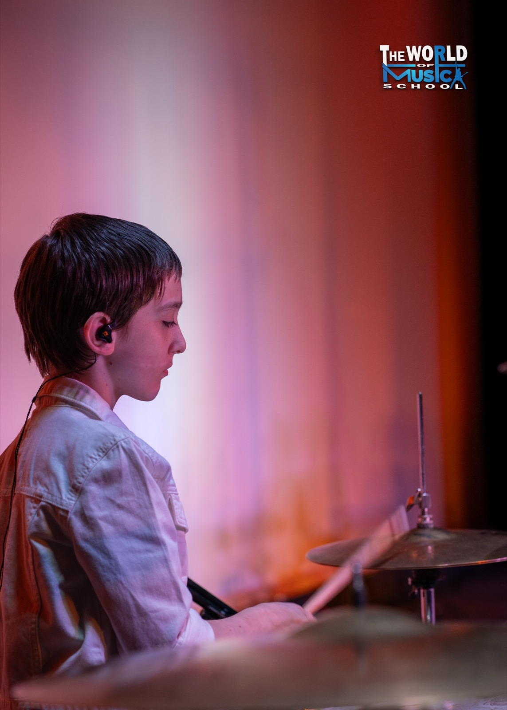
Locked InConcentradoThe official trailer, the backstage energy, and the full "Blast from the Past" recap from the 2025 Battle of the Bands.El trailer oficial, la energía del backstage y el recap completo de "Blast from the Past" del Battle of the Bands 2025.
One flat fee registers your whole band for the entire day — both performances, all four masterclasses, and full award eligibility.Una sola tarifa registra a toda tu banda para el día completo — ambas presentaciones, las cuatro masterclasses y elegibilidad total para premios.
Each school may register up to 3 bands.Cada escuela puede registrar hasta 3 bandas.
Priced separately from band registration. Join the interest list and be first to know.Precio separado del registro de banda. Únete a la lista y sé el primero en saberlo.
Band registration is complete once all required information and payment are received by the deadline. Registration fees are separate from audience admission and Full Event Access Passes.El registro de banda se completa una vez recibida toda la información requerida y el pago antes de la fecha límite. Las tarifas de registro son independientes de la admisión del público y los Pases de Acceso Completo.
World of Bands Florida was created by The World of Music School — but it's bigger than one school. It's a stage for the whole community, and we're inviting three schools to compete alongside ours.World of Bands Florida fue creado por The World of Music School — pero es más grande que una escuela. Es un escenario para toda la comunidad, y estamos invitando a tres escuelas a competir junto a la nuestra.
Your bands, your coaches, and your school name in front of hundreds of local families.Tus bandas, tus coaches y el nombre de tu escuela frente a cientos de familias locales.
A professional stage and a championship to train for transforms a semester of lessons.Un escenario profesional y un campeonato por el cual entrenar transforma un semestre de clases.
We handle the venue, stage, backline, sound, judges, awards, and event staff. You bring the bands.Nosotros ponemos el venue, escenario, backline, sonido, jueces, premios y staff. Tú traes las bandas.
Every participating school gets lobby presence to meet prospective families.Cada escuela participante tiene presencia en el lobby para conocer a familias interesadas.
Only four school slots per edition — three bands each.Solo cuatro cupos de escuela por edición — tres bandas cada una. When they're gone, they're gone.Cuando se acaban, se acaban.
The field is always 12 bands total, with a maximum of 3 bands per school. If participating schools register fewer than three bands each, an additional school may be invited to complete the 12-band field.El total siempre es de 12 bandas, con un máximo de 3 bandas por escuela. Si las escuelas participantes registran menos de tres bandas cada una, podría invitarse a una escuela adicional para completar las 12 bandas.
Whether you run a music school, coach a band, or play in one — tell us who you are and we'll reach out with next steps, dates, and the official registration packet.Ya sea que dirijas una escuela de música, seas coach de una banda o toques en una — cuéntanos quién eres y te contactaremos con los próximos pasos, fechas y el paquete oficial de registro.
Schools: response within 48 hours, including division details, requirements, and the participation agreement.Escuelas: respuesta en 48 horas, incluyendo detalles de divisiones, requisitos y el acuerdo de participación.
Your interest form is ready to send. If your email app didn't open automatically, write to us directly and we'll take it from there.Tu formulario está listo para enviar. Si tu app de correo no se abrió automáticamente, escríbenos directamente y seguimos desde ahí.
info@theworldofmusicschool.comFour schools. Twelve bands. A day your students will never forget. Slots are limited — let's talk.Cuatro escuelas. Doce bandas. Un día que tus estudiantes nunca olvidarán. Los cupos son limitados — hablemos.
Register Your SchoolInscribe tu Escuela{kind=link}
{kind=link}
{kind=link}
{kind=link}
{kind=link}
{kind=link}
{kind=link}
{kind=link}
{kind=link}
{kind=link}
{kind=link}
{kind=link}
{kind=link}